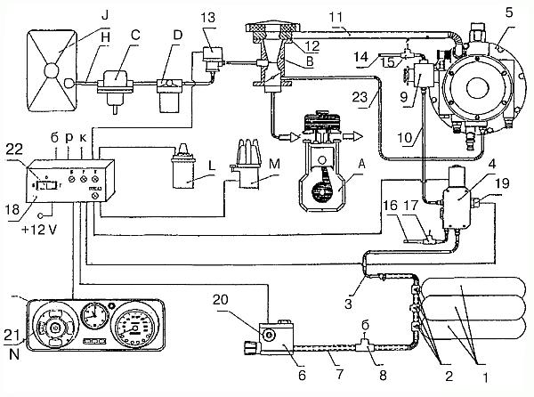

Газобаллонное оборудование «САГА-7».
Научно-производственная фирма «САГА» и пермское авиационное объединение «ИНКАР» разработали, внедрили в производство и наладили выпуск автомобильной газовой топливной системы «САГА-7» для использования компримированного природного газа – метана. Эту систему можно устанавливать на любые модели легковых автомобилей отечественного и иностранного производства (при рабочем объеме двигателя до 4,5 л). Она исключительно проста в эксплуатации, безопасна, высоконадежна и экономична.
В зависимости от марки автомобиля, конфигурации и массы баллонов на автомобиль устанавливают от одного до трех баллонов. На рис. 26 показана работающая на компримированном газе газобаллонная установка, содержащая три баллона (1) высокого давления. Каждый баллон представляет собой металлический корпус, покрытый армированным слоем стеклопластика, что повышает его прочность и уменьшает массу. Внутренняя поверхность баллонов имеет антикоррозионное покрытие. Баллоны крепятся с помощью кронштейнов и хомутов, предохраняющих их от перемещения и повреждений. Запас газа в трех баллонах рассчитан на пробег около 250 км.

Рис. 26. Принципиальная схема автомобильной газовой топливной системы «САГА-7».
Обозначение составных частей «САГА-7»: 1 – баллоны; 2 – вентили баллонов; 3, 10 – трубопроводы высокого давления; 4 – газовый электромагнитный клапан; 5 – двухступенчатый редуктор-подогреватель низкого давления; 6 – заправочное устройство; 7 – дренажный гофрированный шланг; 8, 15, 17 – датчики протечки газа (б – в багажном отделении, р – редукторе высокого давления, к – клапане газовом электромагнитном); 9 – редуктор высокого давления; 11 – трубопровод низкого давления; 12 – газовый смеситель; 13 – бензиновый электромагнитный клапан; 14 – дренажный шланг редуктора высокого давления; 16 – дренажный шланг газового электромагнитного клапана; 18 – электронное устройство; 19 – датчик давления газа; 20 – датчик блокировки запуска двигателя; 21 – указатель количества бензина в баке и давления (количества) газа в баллонах; 22 – трехпозиционный переключатель вида топлива «бензино-газ»; 23 – вакуумный шланг.
Каждый баллон снабжен собственным вентилем (2), который содержит скоростной клапан и разрывную предохранительную мембрану (по температуре). Это предотвращает возможность разрыва баллона. Вентиль имеет дренажные каналы, по которым газ в случае утечки выводится через гибкие дренажные гофрированные шланги (7) за пределы автомобиля. В шланг вмонтирован датчик (8), сигнализирующий об утечке газа.
Баллоны заправляют одновременно через заправочное устройство (6), в котором также имеются дренажные каналы для отвода газа в случае его утечки. В корпусе заправочного устройства размещены фильтр, выдерживающий давление 20 МПа, заправочный вентиль и датчик блокировки пуска (20) двигателя в случае, если заправочный шланг АГНКС не отсоединен от заправочного устройства системы.
Баллоны соединены между собой трубопроводом высокого давления (3), переходящим в газовую магистраль. Трубопровод наружным диаметром 6 мм и внутренним 4 мм выполнен из нержавеющей стали с заводской развальцовкой и рассчитан на рабочее давление 20 МПа. Гайки и ниппели – «авиационной» конструкции.
На автомобиле установлен двухступенчатый редуктор-подогреватель низкого давления (РНД) (5) из комплекта «САГА-6», применяемый на газобаллонных автомобилях при использовании газа сжиженного нефтяного. Для работы двигателя на сжатом газе в него устанавливается выполненный с высокой точностью дополнительный узел-редуктор высокого давления (РВД) (9), изготовленный из латуни. Он понижает давление с 20 до 0,5–1,2 МПа и обладает высокой надежностью и малыми размерами. Обогрев РВД осуществляется путем теплопередачи от РНД. Входной штуцер РВД снабжен фильтром, а на его корпусе размещен датчик (15), фиксирующий утечку газа, со штуцером для подключения дренажного гибкого шланга (14), по которому газ в случае утечки выводится за пределы автомобиля.
Шланг (11) соединяет выходной штуцер РНД с газовым смесителем (12), закрепленным на карбюраторе и предназначенным для приготовления газовоздушной смеси.
Газовая система питания также включает в себя электромагнитный газовый клапан (ЭМК) 4, рассчитанный на давление 29 МПа, фильтр, датчик (17), определяющий утечку газа, со штуцером для подключения гибкого дренажного шланга (16), датчик давления (количества газа (19), показывающий на приборном щитке автомобиля К количество оставшегося газа в баллонах.
Бензиновая система питания при установке систем для использования КПГ содержит традиционные элементы: карбюратор, бензиновый электромагнитный клапан (13), фильтр тонкой очистки (D), бензонасос (C), бензопровод (H) и бензобак (J).
Штатный указатель (21) уровня бензина при работе на этом топливе показывает его количество в бензобаке, а при работе на газе – количество (давление) газа в баллонах.
Газобаллонную установку рассматриваемой конструкции отличает от других наличие электронного устройства (18), включающего в себя корректор угла опережения зажигания. Оно позволяет мгновенно переходить с бензина на газ и подстраиваться под частоту вращения коленчатого вала. При низкой частоте вращения коленчатого вала электрическое устройство увеличивает угол опережения зажигания для газа, при высокой частоте – снижает по сравнению с работой двигателя на бензине.
Автоматическое электронное устройство (18), представляющее собой блок обработки сигналов, поступающих от датчиков импульсов, обеспечивает:
– звуковую и световую сигнализацию в салоне водителя об утечке газа и о том, где именно произошла утечка: в багажном отделении, редукторе высокого давления, или в электромагнитном газовом клапане;
– согласование датчика давления газа в баллонах с указателем уровня бензина в комбинации приборов автомобиля;
– выключение электромагнитного газового клапана при остановке двигателя;
– блокировку пуска двигателя, если заправочный шланг газонаполнительной станции не отключен от заправочного устройства системы;
– переключение на другой вид топлива;
– автоматический встроенный контроль исправности электронного устройства.
При работе газобаллонной установки компримированный (сжатый) природный газ из баллонов (1) высокого давления через вентили (2) попадает в трубопровод высокого давления (3), а затем в электромагнитный клапан (4) с фильтром. Здесь газ очищается от механических примесей и поступает в прогретый теплоносителем редуктор высокого давления (9), где давление газа понижается до 0,5–1,2 МПа. Далее вся работа газобаллонной установки идет по традиционной схеме, как и для сжиженного газа.